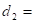
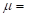

Прорачун ручног свлакача
Налегање између ручице и навојног вретена
треба да је лако покретљиво, па се усваја налегање првог степена приоритета: из Т 7.16
за пречник ручице: 8  дозвољена одступања су:
дозвољена одступања су:
За рупу: ∅8
 22 тј. 0.022
22 тј. 0.022
0 тј. 0
За осовину: ∅8
-13 тј. -0.013
-28 тј. -0.028
Налегање између навртке и траверзе
треба да је чврсто, па се усваја налегање првог степена приоритета, које се препоручује за чауре лежишта и главчина: из Т 7.16
за пречник навртке: 17 дозвољена одступања су:
За рупу: ∅17
18 тј. 0.018
0 тј. 0
За осовину: ∅17 
34 тј. 0.034
23 тј. 0.023


Траверза је изложена савијању:
Највећи момент савијања и најмања носећа површина је у пресеку А-А, на месту на коме је утиснута навртка.
Пресек А-А приказан је упрошћено ради лакшег прорачуна. Мере пресека су:
Карактеристичне величине - димензије ручног свлакача:
17
25
28
Највећи момент савијања у пресеку А-А је у треунтку крајњег положаја пипка на растојању: од средишта траверзе и износи:
459000 
Аксијални отпорни момент инерције површине попречног пресека А-А износи:
1045.333 
Радни напон савијања:
439.094 
Савијање у пресеку А-А има карактер једносмерно промењивог оптерећења, па је за прoверу степена сигурности меродавна трајна динамичка издржљивост на једносмерно промењиво оптерећење за Č.1530 Т 2.3 М.Е.I

 520
520
Степен сигурности пресека А-А износи:
1.184
Степен сигурности треба да је у границама 1.5 до 3, морамо на неки начин повећати аксијални отпорни момент инерције - повећавамо висину траверзе ( највећи утицај јер је трећи степен ):
35 - меродавна за даљни прорачун
поново рачунамо:
1633.333
281.0204
1.850 - што задовољава
У случају да је степен сигурности био превелик, смањивали бисмо висину траверзе, водећи рачуна о потребној крутости конструкције. Не бисмо смели смањивати пречник траверзе и навртке: јер би то утицало на носивост навоја навртке и на смањивање носивости чврстог налегања између навртке и траверзе!
Провера подешених завртњева
Веза пипка и обухватнице остварена је помоћу два подешена вијка. Два пресека вијка В-В изложена су смицању од силе .
Напон смицања :
Број површина
смицања:
 2
2
Фактор неравномерности оптерећења појединих завртњева: 1.5
Пречник стабла завртња, непозната величина коју треба одредити: 7.244
Дозвољени напон смицања се рачуна
:
77.333
Из Т 2.3 М.Е.I за Č.0545
:
 290
290

Степен сигурности
усвајамо из T2.5:  3
3
Усвајам пречник стабла завртња: 9 - Т 4.5 М.Е I за средњи груби квалитет (и Т 7.43), коме одговара пречник завртња - навој М8.
висина подлошке:
1.6

висина навртке:

 6.5
6.5

Стандардна дужина завртња: 28 - Т 7.43
Дужина навоја: 14 - Т 7.43
Потребно је одузети дужину где почиње навој јер она не преноси оптерећење, па се добија за дужину стабла завртња без навоја ( реално могућу ):
Дужина стабла без навоја: 12
Дебљина пипка:  6
6
Усваја се дебљина обухватница
:  3.6 тј.
3.6 тј.  4
4
У пресеку В-В постоје три површине додира меродавна је најмања за прорачун, између вијка и дела обухватнице до навртке подешеног завртња!
Најмања дужина додира: 2
Карактеристичне величине - димензије ручног свлакача:
Површински притисак између стабла завртња, вијка и обухватнице:
177.083
Број вијака на пипку: 2
Дозвољени површински притисак
између стабла, вијка и обухватнице:
116
Како површински притисак незадовољава повећавамо дебљину пипка!
Дебљина пипка: 10
Усваја се дебљина обухватница
: 6 тј. 10
Стандардна дужина завртња: 40 - Т 7.43
Дужина навоја: 14 - Т 7.43
Дужина стабла без навоја: 24
Најмања дужина додира: 4
Површински притисак између стабла завртња, вијка и обухватнице:
88.542 - што задовољава!
Како је
пречник описане кружнице
око главе завртња:
 15 - Т 7.43
15 - Т 7.43
Усвајам
конструкциону димензију пипка
: 16
Провера степена сигурности навојног вретена на сложен напон
Момент увијања у навојном вретену (М.Е.I - покретни навојни спојеви) износи:
6571.309
Момент увијања потребан за покретање навојног вретена, да савлада трење у навојном споју!
Момент увијања потребан да савлада момент трења на додиру аксијалног рукавца и лежишта!
Из књиге М.Е.I прочитати лекцију основе прорачуна машинских елемената!
За покретне навојне спојеве користе се: трапезни и коси навој, приказани на слици испод:

Карактеристичне величине трапезног и косог навоја су приказане у табелама Т 4.3 и Т 4.4 испод:
По услову задатка задан је трапезни навој JUS M.B0.062, па из Т 4.3 М.Е.I бирамо карактеристичне величине заданог навоја:
57 
12
8.5
 10.5
 1.25 Теоријска дубина ношења навојног споја М.Е.I
1.25 Теоријска дубина ношења навојног споја М.Е.I
 5.2 ° тј. 0.090757121 rad (због рада у Еxcelu)
5.2 ° тј. 0.090757121 rad (због рада у Еxcelu)
 30 ° тј. 0.523599 rad (због рада у Еxcelu)
30 ° тј. 0.523599 rad (због рада у Еxcelu)
0.051764  0.051718 rad 2.963203 °
0.051718 rad 2.963203 °
Напомена:
трапезни навој је симетричан, па се у последњем изразу користи  . Коси навој је несимтеричан, па се користи: , конкретно: уместо: у последњем изразу.
. Коси навој је несимтеричан, па се користи: , конкретно: уместо: у последњем изразу.
Коефицијент трења клизања за подмазане површине:  0.05
2 - усвојени средњи полупречник додира шиљка и средишњег гнезда!
Коефицијент трења на додиру шиљка и средишњег гнезда: 0.01 (покретни навојни спојеви М.Е.I)
Напон притиска:
149.123
Напон увијања:
54.496
Поларни отпорни момент инерције пов. поп. пресека језгра навојног вретена се рачуна по обрасцу:
 120.583 - зашто се узима ?
120.583 - зашто се узима ?
Сложен напон:
162.832
Коефицијент свођења тангентног на нормалан напон: 1.2 (може се усвојити)
Степен сигурности навојног вретена:
1.781 незадовољава јер је минималан степен сигурности:  3 - Зашто?
3 - Зашто?
290 за Č.0545
Степен сигурности незадовољава, принуђени смо узети већи трапезни навој:
Усвајамо трапезни навој JUS M.B0.062, па из Т 4.3 М.Е.I бирамо карактеристичне величине навоја:
143
18
13.5
16
1.75 Теоријска дубина ношења навојног споја М.Е.I
4.57 ° тј. 0.079761547 rad (због рада у Еxcelu)
30 ° тј. 0.523599 rad (због рада у Еxcelu)
0.051764 0.051718 rad 2.963203 °
Коефицијент трења клизања за подмазане површине: 0.05
Момент увијања у навојном вретену (М.Е.I - покретни навојни спојеви) износи:
9162.462
2 - усвојени средњи полупречник додира шиљка и средишњег гнезда!
Коефицијент трења на додиру шиљка и средишњег гнезда: 0.01 (покретни навојни спојеви М.Е.I)
Напон притиска:
59.441
Напон увијања:
18.966
Поларни отпорни момент инерције пов. поп. пресека језгра навојног вретена се рачуна по обрасцу:
483.094 - зашто се узима ?
Сложен напон:
63.649
Коефицијент свођења тангентног на нормалан напон: 1.2 (може се усвојити)
Степен сигурности навојног вретена:
4.556 задовољава јер је минималан степен сигурности: 3 - Зашто?
290 за Č.0545
Провера површинског притиска у навојном споју
Површински притисак у навојном споју (М.Е.I - покретни навојни спојеви) износи:
 14.316
14.316
Зашто се површински притисак рачуна по наведеној једначини???
Корак навоја:  4
4
Висина навртке: 27 (гледати да се добије цели број)
Сада се мења и пречник навртке, који одређујемо из услова дозвољеног површинског притиска:
32.334
усвајам: 33.5 - стандардни пречник навртке Т 0.1 М.Е.I!

По поставци задатка ради се о навртци од бронзе за коју је дозвољени површински притисак:  . Усвајам дозвољени површински притисак
. Усвајам дозвољени површински притисак  15
15
Површински притисак задовољава јер је:
Мењају се димензије траверзе, па усвајам спољашњи пречник траверзе:
40
поново рачунамо:
1327.083
345.871
1.503 - што задовољава
Провера степена сигурности на извијање
Навојно вретено се проверава на извијање! За случај ручног свлакача ради се о четвртом случају извијања - греда обострано укљештена, за који је редукована дужина навојног вретена:

Редукована дужина навојног вретена:
45
Минималан полупречник инерције за кружни попречни пресек се рачуна:
3.375
Виткост навојног вретена: 13.333

Ако је израчуната виткост: мања од граничне виткости ( < ), критичан напон за случај извијања се рачуна по Тет Мајеровој једначини (зависно од материјала):
-
Меки челици:

-
Полутврди челици:

-
Тврди, врло тврди и легирани челици:

Ако је израчуната виткост: већа од граничне виткости ( > ), критичан напон за случај извијања се рачуна по Ојлеровој једначини:
У нашем случају за Č.1530  89, а израчуната виткост 13.333
89, а израчуната виткост 13.333
< па се критичан напон рачуна по Тет Мајеровој једначини:  326.733
326.733
Степен сигурности на извијање:
 5.497 задовољава јер је минималан степен сигурности за случај извијања: 4
5.497 задовољава јер је минималан степен сигурности за случај извијања: 4
Напомена: У случају да нам било који израчунати степен сигурности или површински притисак нису у предвиђеним тј. дозвољеним границама морали бисмо усвојити следећи већи пречник навоја, поново израчунати Т, проверити све остале степене сигурности и површински притисак, тако постепено повећавати - усвајати следећи већи пречник навоја рачунати степене сиг. и пов. притисак све док ст. сигурности и површински притисак не буду у предвиђеним границама!
Усвојени навој који задовољи све степене сигурности и површински притисак је меродаван за даљи прорачун и конструкцију ручне дизалице!
По поставци задатка ручним свлакачем рукује један радник, па је коефицијент неравномерности оптерећења: 0.8, као што је и задано!
Број радника: 1 ( 1)
Један радник остварује момент увијања:
9162.462 ручном силом која је за просечног радника:  150
150 
Усвајам
пречник главе навојног вретена:
27
Крак силе:
61.083
Узимајући у обзир дужину навоја за кугле: ≈ 20 , као и део ручице који се налази у глави ручног свлакача, укупна дужина ручице износи:
128.083
Усвајам дужину:
150
Ручица је оптерећена на савијање:
 .............. (2)
.............. (2)
Момент савијања:
9162.462
Дозвољени напон:
 116.667
116.667
Трајна динамичка чврстоћа на једносмерно промењиво оптерећење се усваја за материјал ручице: Č.0545 из T 2.3 M.E.I:
350
Зашто је ручица оптерећена на савијање, динамички са једносмерном променом напона? - ( М.Е. I основе прорачуна маш. елем.)
Т 2.5 М.Е.I
степен сигурности: 3 (зашто?)
У једначини (2) се користи: аксијални отпорни момент површине попречног пресека (отпорност материјала) који се рачуна по обрасцу:
.............. (3)
Уврштавајући једначину (3) у једначину (2) добијамо израз за пречник ручице:
 9.283
9.283
Из Т 0.1 М.Е.I
усваја се "први" већи стандардни пречник ручице: 10
Како смо променили димензије навртке и ручице у односу на задане, поново одређујемо налегање!
Налегање између ручице и навојног вретена
треба да је лако покретљиво, па се усваја налегање првог степена приоритета: из Т 7.16
за пречник ручице: 10 дозвољена одступања су:
За рупу: ∅10
22 тј. 0.022
0 тј. 0
За осовину: ∅10
-13 тј. -0.013
-28 тј. -0.028
Налегање између навртке и траверзе
треба да је чврсто, па се усваја налегање првог степена приоритета, које се препоручује за чауре лежишта и главчина: из Т 7.16
за пречник навртке: 33.5 дозвољена одступања су:
За рупу: ∅33.5
25 тј. 0.025
0 тј. 0
За осовину: ∅33.5
50 тј. 0.050
34 тј. 0.034
Ручни свлакач : се користи за раздвајање стезних спојева. Пипцима 4 обухвата се спољни део стезног споја и навојним паром се врши демонтажа споја.
Карактеристичне величине - димензије ручног свлакача:
Услед отпора клизању који који се јавља у стезном споју, пипци, навојно вретено и навојни спој изложени су дејству силе која је једнака овом отпору. С обзиром да се на спољни део делује силом помоћу два пипка, то је сила на једном од њих једнака половини укупне силе.
Силе у пипцима преносе се на попречну траверзу 3 и у њеним попречним пресецима изазивају савијање, чији напон је највећи на средини траверзе, у пресеку А-А, и то кад су пипци у свом крајњем положају на растојању од пресека А-А: овај пресек је опасан и на њему се проверава напон савијања!
Завршетак навојног вретена трпи велики површински притисак због мале додирне површине шиљка и чеоне површине дела са кога се раздваја машински део. Да би се повећао радни век, односно број операција свлачења, шиљак се обично поставља у чеони завршетак навојног вретена, на начин приказан на детаљу А.
Тако се постиже да шиљак мирује, чиме му се продужава радни век. Осим тога шиљак се може израдити од квалитетног челика, који након каљења може имати високу површинску чврстоћу.
Пипци могу бити израђени из једног дела или из посебних обухватница које се помоћу подешених вијака спајају са пипцима.